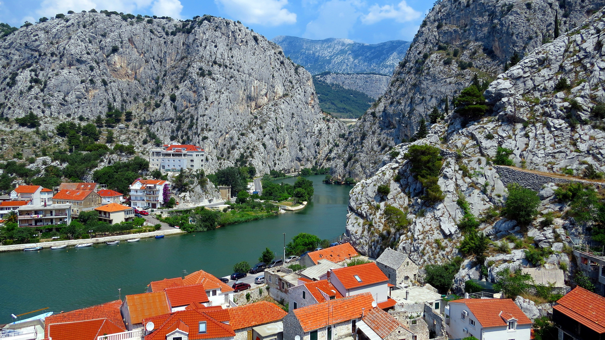
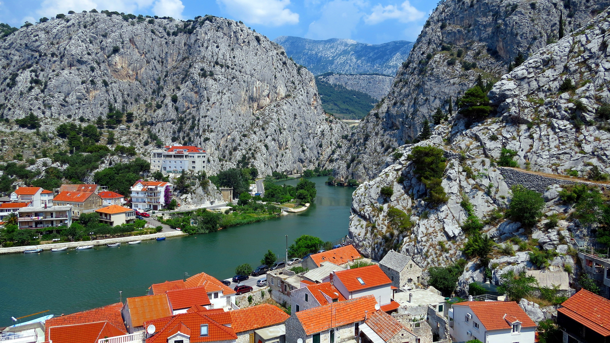
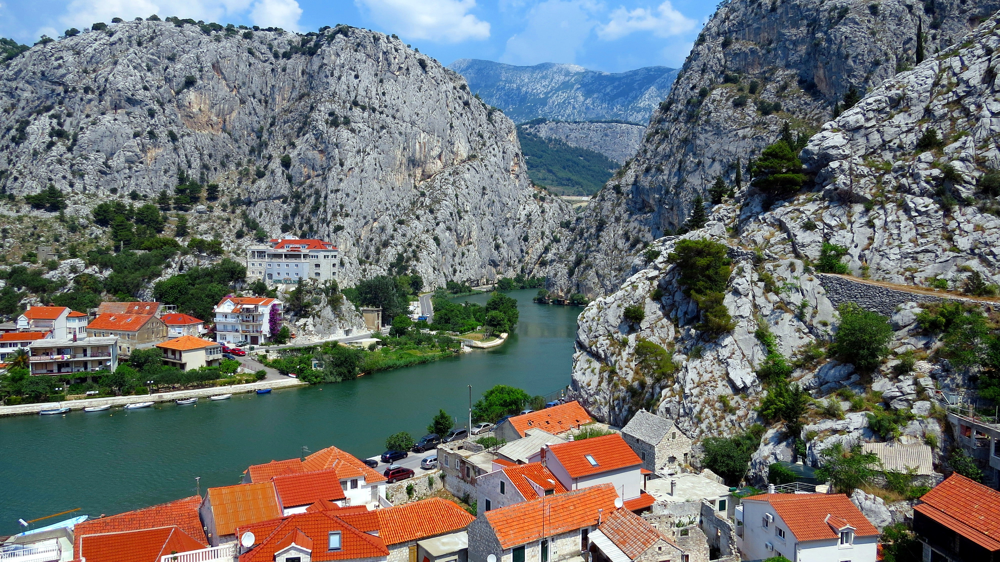

Les paysages
 

La Croatie est un pays d'Europe de l'Est sur la côte adriatique. Si elle compte plus d'un millier d'îles, elle est aussi traversée par les Alpes dinariques. Sa capitale, Zagreb, se distingue par sa haute-ville médiévale (Gornji Grad) et ses nombreux musées. Dubrovnik est une ville côtière fortifiée dont les énormes remparts datant du XVIe siècle entourent le vieux centre aux constructions gothiques et Renaissance.
lien siteMaslinica est un village portuaire de Croatie sur l'île de Šolta dans le comitat de Split-Dalmatie. En 2011 sa population était de 208 habitants. À l'époque de l'Empire Austro-Hongrois, les villages de l'île de Šolta avaient encore des noms italiens, et Maslinica s’appelait Porto Olivetto
